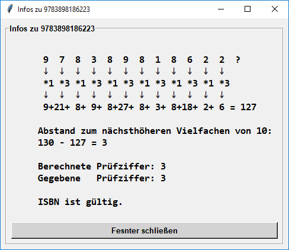
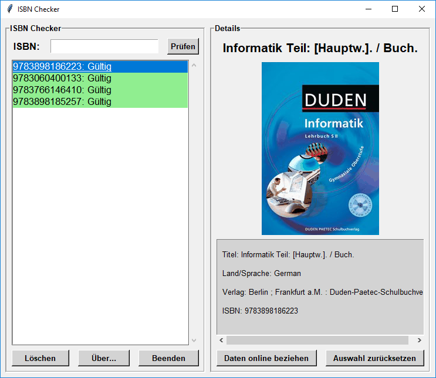
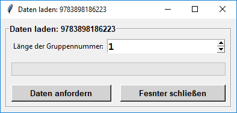

ISBN-Nummern dienen zur eindeutigen Kennzeichnung von Büchern und sind nach folgendem Muster aufgebaut:
Land Titelnummer | | | | ISBN 978 - 3 - 89818 - 622 - 3 | | | | | | Präfix Verlag Prüfziffer
Die Prüfziffer wird dazu verwendet, um z.B. zu überprüfen, ob die Nummer fehlerfrei eingelesen/übertragen wurde. Das Prüfverfahren funktioniert folgendermaßen:
Der ISBN Checker bietet über das simple Überprüfen von ISBN-Nummern hinaus zusätzlich die Möglichkeit, weitere Details zur ISBN-Nummer aus dem Internet zu laden (bereitgestellt durch portal.dnb.de | Deutsche Nationalbibliothek).
Die zu prüfende ISBN-Nummer wird oben links eingegeben und erscheint dann in der Liste darunter. Ein Doppelklick auf einen Eintrag öffnet Details zur Prüfnummerberechnung (s. o.). Ist ein Eintrag ausgewählt, kann mit dem Knopf "Daten online beziehen" der Buchcover und Details wie Titel, Verlag oder Sprache/Land heruntergeladen werden. Dieser Vorgang dauert etwa 2-7s. (Das Land wird mittels einer lokalen Datenbank bestimmt, daher sollte die Länge des Länderteils angegeben werden.)

Die heruntergeladenen Daten werden im Verzeichnis "saved" lokal zwischengespeichert und können beim Schließen des Programms wahlweise
gelöscht oder behalten werden.
Zum Testen des Programms können mit Taste "E" 4 Beispiel-ISBNs geladen werden.